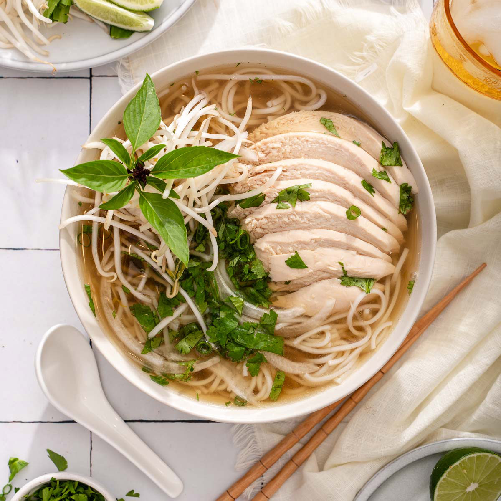

Chicken Pho

Description
Great for pho beginners, this recipe is also terrific for cooks in a hurry. It
involves less than 45 minutes, during which you'll doctor up store-bought
broth so it says, "I'm pho-ish".
Ingredients
- 3/4 inch section ginger
- 2 medium-large green onions
- 1 small sprig cilantro
- 1 1/2 tsps coriander seeds
- 1 whole close
- 3 1/2 to 4 cups chicken bone broth
- 2 cups water
- 6-8 oz boneless skinless chicken breast
- 1/2 tsp sea salt
- 5 pz flat rice noodles
- 2-3 oz fish sauce
- 1 tsp maple syrup
- Pepper
Steps
- Peel then slice the ginger into 4 or 5 coins. Smack with the flat side
of a knife or meat mallet; set aside. Thinly slice the green parts of the
green onion to yield 2 to 3 tablespoons; set aside for garnish. Cut the
leftover sections into pinkie-finger lengths, bruise, then add to the
ginger.
- Coarsely chop the leafy tops of the cilantro to yield 2 tablespoons;
set aside for garnish. Set the remaining cilantro sprigs aside.
- In a 3 to 4 quart pot, toast the coriander seeds and clove over medium heat
until fragrant, 1 to 2 minutes. Add the ginger and green onion sections.
Stir for about 30 seconds, until aromatic.
- Slide the pot off heat, wait 15 seconds or so to briefly cool, the pour in
the broth. Return the pot to the burner, then add the water, cilantro
sprigs, chicken, and salt. Bring to a boil over high heat, then lower heat
to gently simmer.
- After 5 to 10 minutes of simmering, the chicken should be firm and
cooked through (press on it and it should slightly yield). Remove cooked
chicken from broth.
- Continue to simmer the broth without the chicken for another 15 to 20
minutes (for a total of 30 minutes simmering time).
- Transfer the chicken to a bowl, flush with cold water to arrest the
cooking, then drain. Let cool, then cut or shred into bite size pieces.
Cover loosely to prevent drying.
- Soak the rice noodles in hot water until pliable and opaque. Drain, rinse,
and set aside.
- When the broth is done, pour it through a fine-mesh strainer positioned
over a 2-quart pot; line the strainer with muslin for superclear broth.
Discard the solids. Season with fish sauce and maple syrup, if needed,
to create a strong savory-sweet note.
- Peel then slice the ginger into 4 or 5 coins. Smack with the flat side
of a knife or meat mallet; set aside. Thinly slice the green parts of the
green onion to yield 2 to 3 tablespoons; set aside for garnish. Cut the
leftover sections into pinkie-finger lengths, bruise, the add to the
ginger.
- Lower the heat to keep the broth hot while you arrange the chicken on top
of the noodles and garnish with the chopped green onion, cilantro, and a
sprinkling of pepper. Taste and adjust the broth’s saltiness one last
time. Return the broth to a boil and ladle into the bowls. Enjoy with any
extras, if you like.